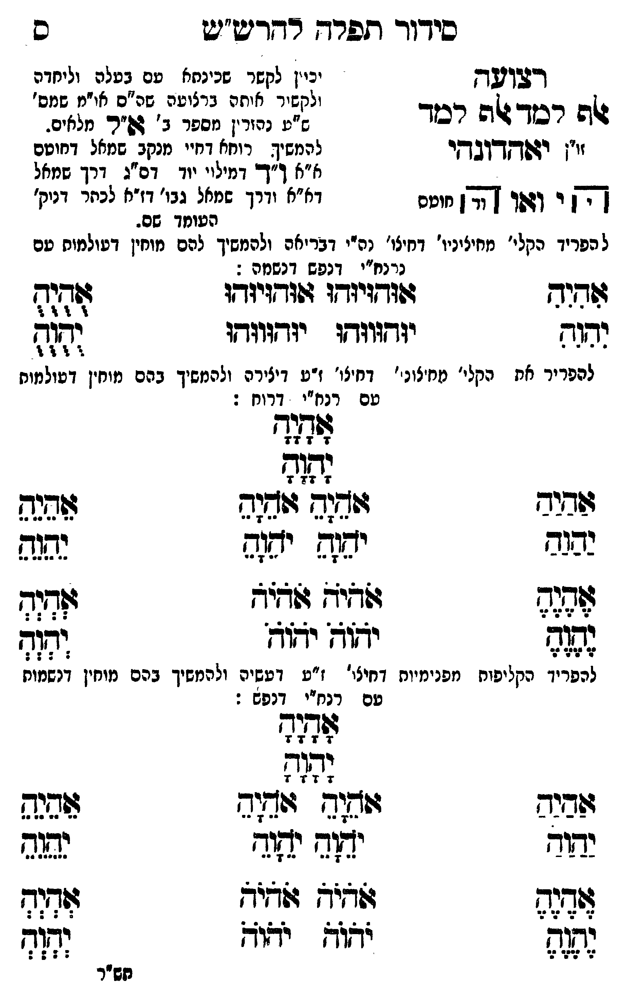

Neue Klartextfassung
רצועה אלף למד אלף למד [יכוין לקשר שכינתא עם בעלה וליחדה ולקשור אותה ברצועה שה"ס או"מ שמס' ס"ע נהורין מספר ב' א"ל מלאים.] [זו"ן] יאהדונהי [להמשיך רוחא דחיי מנקב שמאל דחוטם א"א ו"ד דמילוי יוד דס"ג דרך שמאל דא"א ודרך שמאל גבו' דז"א לכתר דנוק' העומד שם.] [ציור שילוב שמות; צורת הקווים אינה משוחזרת בטקסט.] הי ואו הי וד [חוטם] [להפריד הקלי' מחיצוני' דחיצו' נה"י דבריאה ולהמשיך להם מוחין דעולמות עם נרנח"י דנפש דנשמה:] === טבלה === [טור ימין] אִהִיִהִ יִהִוִהִ [טור אמצעי] אוּהוּיוּהוּ אוּהוּיוּהוּ יוּהוּווּהוּ יוּהוּווּהוּ [טור שמאל] אֻהֻיֻהֻ יֻהֻוֻהֻ === סוף טבלה === [להפריד את הקלי' מחיצוני' דחיצו' ז"ע דיצירה ולהמשיך בהם מוחין דעולמות עם רנח"י דרוח:] אָהָיָהָ יָהָוָהָ === טבלה === [טור ימין] אַהַיַהַ יַהַוַהַ אֶהֶיֶהֶ יֶהֶוֶהֶ [טור אמצעי] אֹהֵיָהֵ אֹהֵיָהֵ יֹהֵוָהֵ יֹהֵוָהֵ אֹהֹיֹהֹ אֹהֹיֹהֹ יֹהֹוֹהֹ יֹהֹוֹהֹ [טור שמאל] אֵהֵיֵהֵ יֵהֵוֵהֵ אְהְיְהְ יְהְוְהְ === סוף טבלה === [להפריד הקליפות מפנימיות דחיצו' ז"ע דעשיה ולהמשיך בהם מוחין דנשמות עם רנח"י דנפש:] אָהָיָהָ יָהָוָהָ === טבלה === [טור ימין] אַהַיַהַ יַהַוַהַ אֶהֶיֶהֶ יֶהֶוֶהֶ [טור אמצעי] אֹהֵיָהֵ אֹהֵיָהֵ יֹהֵוָהֵ יֹהֵוָהֵ אֹהֹיֹהֹ אֹהֹיֹהֹ יֹהֹוֹהֹ יֹהֹוֹהֹ [טור שמאל] אֵהֵיֵהֵ יֵהֵוֵהֵ אְהְיְהְ יְהְוְהְ === סוף טבלה ===
Original gegen neue OCR · Niqqud für Vergleich ausgeblendet
Original
רצועה אלף למד אלף למד [יכויןK124-001 לקשר שכינתאK124-002 עם בעלה וליחדה ולקשורK124-003 אותה ברצועהK124-004 שה"ס או"מ שמס' ס"עK124-005 נהורין מספר ב' א"ל מלאים.] [זו"ן] יאהדונהי [להמשיךK124-006 רוחא דחיי מנקב שמאל דחוטם א"א ו"דK124-007 דמילוי יוד דס"ג דרך שמאל ∅K124-008 דא"א ודרך שמאל גבו' דז"א לכתר דנוק'K124-009 העומד שם.] [ציור שילוב שמות; צורת הקווים אינה משוחזרת בטקסט.] הי ואו הי וד [חוטם] [להפרידK124-010 הקלי' מחיצוני'K124-011 דחיצו' נה"י דבריאה ולהמשיך להם מוחין דעולמות עםK124-012 נרנח"י דנפש דנשמה:] === טבלה === [טור ימין] אהיה יהוה [טור אמצעי] אוהויוהו אוהויוהו יוהוווהו יוהוווהו [טור שמאל] אהיה יהוה === סוף טבלה === [להפריד אתK124-013 הקלי' מחיצוני' דחיצו'K124-014 ז"ע דיצירה ולהמשיך בהם מוחין דעולמות עםK124-015 רנח"י דרוח:] אהיה יהוה === טבלה === [טור ימין] אהיה יהוה אהיה יהוה [טור אמצעי] אהיה אהיה יהוה יהוה אהיה אהיה יהוה יהוה [טור שמאל] אהיה יהוה אהיה יהוה === סוף טבלה === [להפריד הקליפותK124-016 מפנימיות דחיצו' ז"ע דעשיה ולהמשיך בהם מוחין דנשמות עם רנח"י דנפש:] אהיה יהוה === טבלה === [טור ימין] אהיה יהוה אהיה יהוה [טור אמצעי] אהיה אהיה יהוה יהוה אהיה אהיה יהוה יהוה [טור שמאל] אהיה יהוה אהיה יהוה === סוף טבלה ===K124-017
OCR · fehlbar
סיך(ךד תפרד ר-דיש"יג ס וגד ((K124-001 לקשר שכינחאK124-002 עם בעלה וליחדה ולקשירK124-003 אותה ברצוטהK124-004 שה"ס או"מ שמס' שף רכד שה רסוך לז:K124-005 נהורין מספר ב ' 4פ"ר . מלאים. זו"ן ידשדקךדןבךקי להמשיךK124-006 רוחא דחיי מנקב שמאל דחוטם א"א ך"ך-K124-007 דמילוי יוד דס"ג דרך שמאל דד י וגו ן חוטסK124-008 דא"א ודרך שמאל גבו' דז"א לכחר דניק'K124-009 העומד שם. ל הפרידK124-010 הקלי' מחיציניו'K124-011 דחיצו' נה"י דבריאה ולהמשיך להם מוחין דטולמוס טםK124-012 נרנח"י דנפש דנשמה : שחוש ג(זדזיוחז"זעזזאניזדז: זדג- דגד יודווזתו יזדווודו זל להפריר אחK124-013 הקלי' מחצונ'- דחצו'K124-014 ז"ע דיצירה ולהמשיך בהם מוחין ועולמוח טםK124-015 רנח"י דרוח : שלש ז( שביב (ג(ג דגג ששנת נגב ישזש יש(ש צפנש תל (שאיא שדד ש[גגד לל יווח יגוד לל להפריך הקליפוחK124-016 מפנימיות דחיצו' ז"ע דעשיה ולהמשיך בהם מוחין דנשמוח טם רנחיי דנפש : 84 זז: 8942 גש( ח זו[גךב שקש נתוד יוד ילאיד שנד דגס גזגנח לביב שד(ג (ת(נ יצוא יאי נד(ד חש"רK124-017